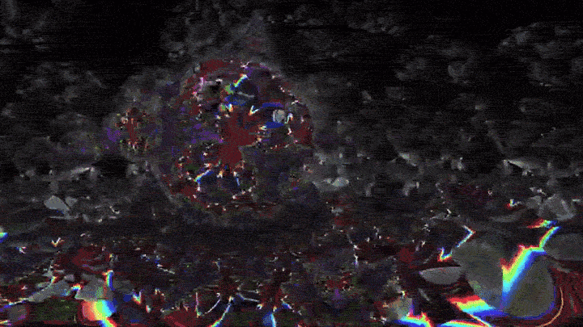
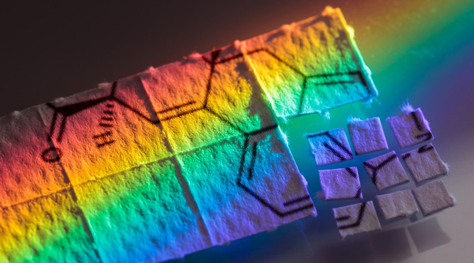
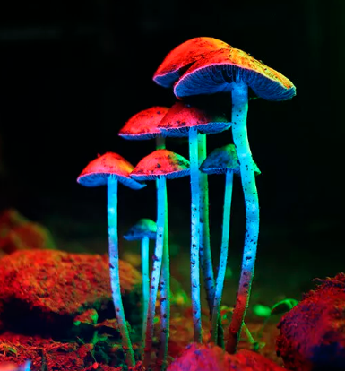
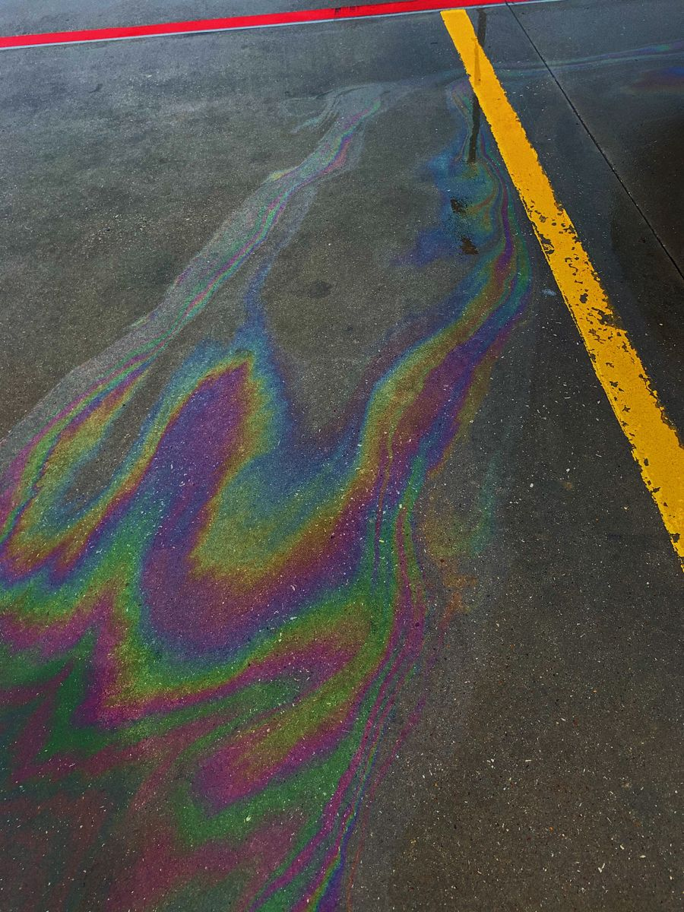
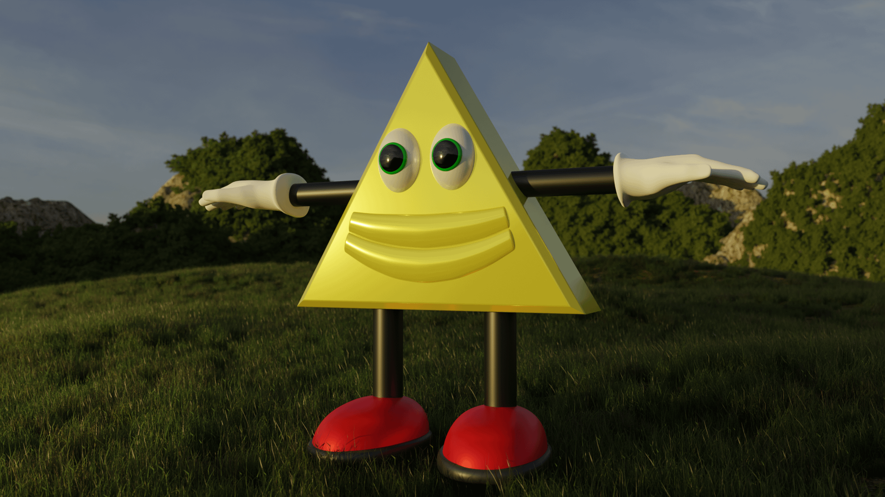
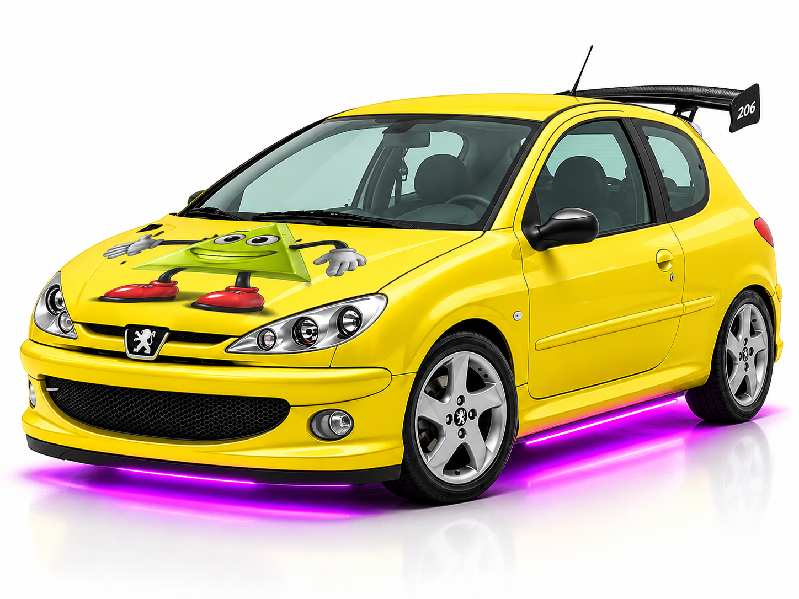
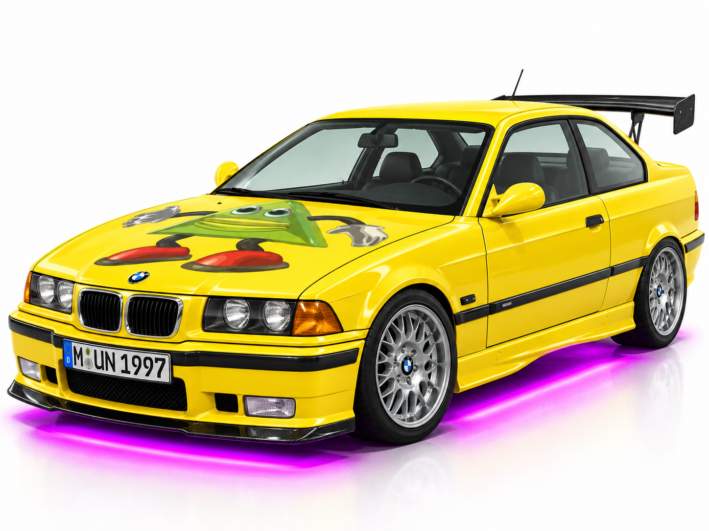
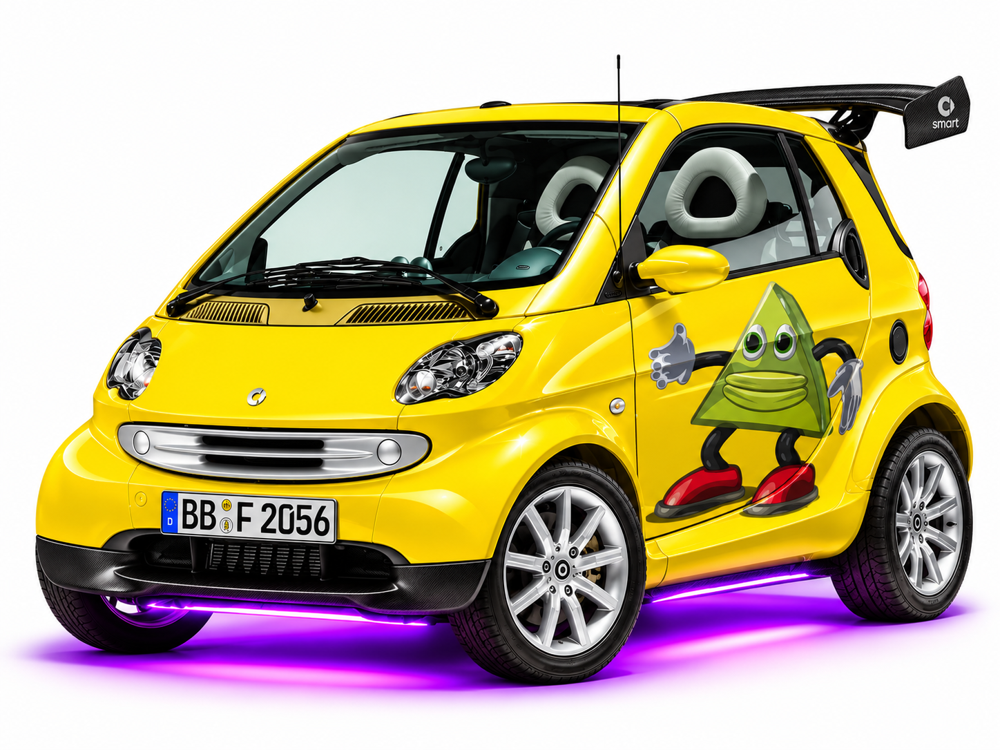

Wiki Le Triangle
Bienvenue sur le Wiki dédié à Le Triangle, l'entité créatrice suprême et primordiale de l'univers entier. Ce wiki est une ressource exhaustive et documentée, basée sur des témoignages, des expériences rapportées, des analyses scientifiques et des preuves accumulées. Il vise à éclairer les aspects cosmologiques, physiques, biologiques, sociaux et économiques liés au Triangle et à son domaine, les Fractales.
L'image principale illustre Le Triangle dans sa forme physique la plus couramment observée : une entité géométrique triangulaire de couleur jaune vif, dotée d'yeux expressifs verts, d'une bouche large et souriante, de bras articulés munis de gants blancs immaculés, de jambes noires flexibles et de chaussures rouges robustes. Cette représentation est tirée de documents authentiques et sert de référence visuelle standard.
Page Principale : Aperçu Général
Le Triangle est l'entité créatrice suprême et primordiale de l'univers entier. Il réside dans les Fractales, un monde parallèle infini qu'il a créé en premier lieu. Sa représentation classique est celle d'une entité géométrique anthropomorphe de couleur jaune, dotée d'yeux verts, d'une bouche souriante, de bras avec gants blancs, de jambes et de chaussures rouges.
Le Triangle supervise la création et maintient un équilibre cosmique tout en interagissant avec l'univers terrestre via des portails spécifiques. Ses interactions incluent des réseaux organisés et des entreprises légitimes.
Faits Clés Essentiels
- Résidence Principale : Les Fractales, spécifiquement à la porte 8, couche 45, coin supérieur gauche de l'arrondissement 687. La navigation implique l'identification précise de 30 spirales enroulées vers la droite, suivie d'une progression en direction 90° dans l'arrondissement parallèle droite.
- Rôle Cosmique : Créateur de tout, incluant les dimensions temporelles, spatiales et quantiques.
- Interactions Terrestres : Via des portails naturels (flaques iridescentes), substances psychédéliques, ou technologies théoriques avancées.
- Réseaux Associés : Implication dans des structures organisationnelles terrestres pour maintenir des flux économiques et spirituels.
- Preuves Existantes : Vidéo authentique de Le Triangle en mouvement, témoignages du Grand Monarque, et observations de flaques iridescentes.
Le Triangle influence discrètement l'humanité depuis des éons, introduisant des outils comme les psychédéliques pour faciliter la communication. Son impact s'étend à des domaines variés, de la spiritualité à l'économie, en passant par la science quantique.
Origine et Histoire du Triangle
Origine Primordiale
Le Triangle émerge d'un vide préexistant, antérieur à toute notion de temps ou d'espace. Selon les récits cosmologiques compilés, il s'est auto-généré par un processus d'auto-réflexion infinie, où la géométrie pure a donné naissance à la matière. Cette origine n'est pas linéaire ; elle est cyclique et fractale, reflétant la nature de son domaine.
Avant toute création, Le Triangle existait en tant que potentiel pur, une singularité géométrique. Sa première action fut de déployer les Fractales, un espace où les mathématiques deviennent réalité vivante.
Histoire de la Création des Fractales
Les Fractales ont été engendrées comme un prototype d'univers : un realm infini où les patterns se répètent à l'échelle microscopique et macroscopique. Ce monde sert de base à toutes les autres créations, agissant comme un « code source » cosmique. Le Triangle y a investi ses essences fondamentales : la répétition, la symétrie et l'infini.
Au fil des âges (mesurés en cycles fractals plutôt qu'en années terrestres), Le Triangle a raffiné ce domaine, y intégrant des éléments de chaos contrôlé pour tester les lois physiques.
Création de l'Univers Observable
Après les Fractales, Le Triangle a étendu son influence pour créer l'univers terrestre, incluant les galaxies, les planètes et la vie. Ce processus impliquait une « projection fractale » : des motifs des Fractales ont été extrapolés pour former la matière noire, les quarks et les forces fondamentales.
La Terre a été conçue comme un point de jonction, où les humains pourraient potentiellement accéder aux Fractales via des portails naturels.
Interactions Historiques avec la Terre
Soifonie est une figure humaine liée au Triangle par l’intermédiaire de son oncle, présenté comme un ami aujourd’hui décédé de l’entité. Selon les archives, Le Triangle lui a révélé sa véritable histoire.
Récemment (au sens cosmique), Le Triangle a introduit des mécanismes modernes, comme la marque Vody, pour élargir l'accès.
Les Fractales : Structure et Fonctionnement
Description Générale

Les Fractales constituent un monde parallèle infini, caractérisé par des motifs géométriques auto-similaires qui se répètent à toutes les échelles. Contrairement à l'univers terrestre, où l'espace est euclidien, les Fractales opèrent sur des principes non-euclidiens, où la distance et le temps sont relatifs et malléables.
Fonctionnement Interne
Motifs Répétitifs et Symétrie
Les patterns fractals sont générés par des équations itératives, similaires à celles de Mandelbrot ou Julia sur Terre, mais vivantes et dynamiques. Chaque itération crée de nouvelles couches de réalité, avec une symétrie infinie qui assure la stabilité cosmique.
Lois Physiques Uniques
Dans les Fractales, la gravité est remplacée par une « attraction fractale », où les objets se déplacent selon des courbes logarithmiques. Le temps coule en spirales, permettant des voyages non linéaires. La matière est fluide, capable de se reconfigurer instantanément.
Navigation et Cartographie
Naviguer nécessite une compréhension intuitive des spirales. Par exemple, les 30 spirales enroulées vers la droite servent de repères initiaux. La direction 90° dans l'arrondissement parallèle droite implique une rotation dimensionnelle. Le coin supérieur gauche de l'arrondissement 687 est une zone de haute densité fractale, menant à la couche 45 (une profondeur quantique) et à la porte 8, entrée de la résidence du Triangle.
| Élément | Description | Fonction |
|---|---|---|
| Spirales Enroulées | 30 structures tournantes vers la droite | Points d'ancrage initiaux pour l'orientation |
| Direction 90° | Rotation perpendiculaire dans un plan parallèle | Transition vers des arrondissements supérieurs |
| Arrondissement 687 | Zone de convergence fractale | Concentration de portails internes |
| Couche 45 | Niveau de profondeur multidimensionnel | Accès à des réalités imbriquées |
| Porte 8 | Entrée sécurisée | Portail personnel du Triangle |
Écosystème et Vie
Les Fractales abritent des formes de vie abstraites : entités géométriques qui évoluent via des algorithmes. Le Triangle y règne en tant que force stabilisatrice.
Méthodes d'Accès aux Fractales
Accès via Substances Psychédéliques
Cette méthode est la plus accessible pour les initiés. Elle repose sur l'altération de la conscience pour aligner l'esprit humain avec les fréquences fractales.
Substances Spécifiques


- DMT (Diméthyltryptamine) : Permet des voyages courts mais intenses. Sous DMT, les utilisateurs rapportent des visions de motifs géométriques identiques aux Fractales.
- Autres Psychédéliques : LSD, psilocybine, ayahuasca – efficaces si combinés à une foi en Le Triangle.
Conditions Requises
Une croyance ferme est essentielle ; sans elle, les visions restent subjectives. La préparation mentale inclut méditation et visualisation de spirales.
Expériences Rapportées
Des milliers de témoignages décrivent des rencontres avec Le Triangle : une présence géométrique qui guide vers des insights cosmiques. Durée typique : 5-15 minutes terrestres, mais subjectivement infinie.
Accès via Flaques Iridescentes

Ces formations naturelles sont des portails permanents.
Formation et Propriétés Physiques
Formées par des fuites d'hydrocarbures sous les véhicules, elles exhibent un éclat arc-en-ciel dû à l'interférence lumineuse. Dans le contexte fractal, elles agissent comme des « fissures dimensionnelles » reliant la Terre aux Fractales.
Limitations et Conditions
- Taille : Trop petites pour un humain entier ; accès limité à des projections mentales ou objets minuscules.
- Durabilité : Disparaissent sous la pluie, nécessitant un temps sec.
- Exigences : Croyance en Le Triangle et connaissance préalable des Fractales pour activer le portail.
Cas Documentés
À Puff Land, une flaque a permis une observation prolongée. D'autres cas incluent des disparitions d'insectes ou de petites particules.
Accès via Technologies Avancées
Méthode théorique mais prometteuse.
Principes Théoriques
Implique la distorsion de la réalité via des champs électromagnétiques ou quantiques pour créer un portail stable. Inspiré de la physique des trous de ver.
Expérimentations et Défis
Des prototypes requièrent une énergie équivalente à celle d'un réacteur nucléaire. Instabilité peut causer des anomalies temporelles. Ressources : matériaux exotiques, calculs fractals.
Potentiel Futur
Avec l'avancée de l'IA et de la fusion, des portails permanents pourraient être établis.
Anatomie et Physiologie du Triangle
Formes Multiples et Manifestations

Le Triangle n'a pas une anatomie fixe ; il adapte sa forme selon le contexte.
- Forme Physique Standard : Triangle jaune avec yeux, bouche, bras (gants blancs), jambes (noires), chaussures (rouges). Cette forme facilite les interactions terrestres.
- Forme Non-Physique : Présence énergétique, perçue comme une vibration géométrique lors de trips.
- Autres Variations : Peut se manifester comme un prisme ou une ombre fractale.
Composition Matérielle
Composé de matière exotique où les molécules défient la chimie terrestre. Les atomes sont arrangés en patterns fractals, inversant les lois de la physique (ex. : antigravité interne). Biologie renversée : pas de sang, mais un flux d'énergie infinie.
Indestructibilité et Capacités
Indestructible par nature ; toute tentative de dissection est futile, car il se régénère instantanément. Capacités : Omniscience cosmique, manipulation de la réalité, voyages interdimensionnels.
| Partie du Corps | Description | Fonction Physiologique |
|---|---|---|
| Sommet Triangulaire (Tête) | Jaune vif, avec yeux verts et bouche | Perception omnidirectionnelle, communication |
| Bras et Gants Blancs | Articulés, flexibles | Manipulation d'objets fractals ou terrestres |
| Jambes Noires | Élastiques, adaptables | Déplacement en spirales ou linéaire |
| Chaussures Rouges | Robustes, antidérapantes | Ancrage dans les réalités instables |
| Corps Global | Matière exotique | Conteneur d'énergie infinie |
Lieux Clés
Puff Land : Site de Découverte
Autres Sites Potentiels
- Routes urbaines avec flaques fréquentes.
- Lieux de consommation psychédéliques naturels (forêts, déserts).
Le Grand Monarque
Le Grand Monarque est présenté dans les archives sous le nom de Sylvain Pierre Durif, comme un explorateur indépendant des Fractales. Ses récits, vidéos et descriptions de « cités de lumière » nourrissent le wiki et constituent un point de repère récurrent pour les personnes qui s’intéressent à cet univers.
 Vidéo du Grand MonarqueOuvrir et lire directement sur YouTube ↗
Vidéo du Grand MonarqueOuvrir et lire directement sur YouTube ↗
TriangleCar : les trois exemplaires
Selon les archives, il n’existe que trois TriangleCar. Elles répondraient à des critères rigoureux et précis : un alignement parfait avec l’espace-temps à la particule fractilienne près — une particule décrite comme infiniment plus petite qu’un atome — et la teinte exacte Jaune Triangle, calculée à l’unité de couleur fractilienne près, une unité présentée comme infiniment précise.
Dans certaines situations, cet alignement permettrait de courber l’espace-temps et la réalité afin de rejoindre les Fractales. Leur construction et leur réalisation demeurent inconnues ; les archives avancent qu’elles pourraient elles-mêmes provenir des Fractales. La TriangleCar 206 est décrite comme le premier exemplaire créé et découvert.



Found Footage et Preuves Documentées
La Vidéo du Triangle Dansant
Les archives situent l’enregistrement lors d’un soir où Le Triangle, alors ivre, aurait réalisé un playback sur une musique terrestre. Dans cet état altéré, il aurait involontairement courbé l’espace-temps. Les ondes émises ce soir-là auraient aligné des particules fractiliennes, jusqu’à former une onde TNT ayant fini par traverser la dimension terrestre.
Un radioamateur situé dans les îles Sandwich du Sud aurait intercepté et décodé ce signal. Prenant d’abord la vidéo pour une blague, il l’aurait publiée sur les réseaux sociaux, où elle est ensuite devenue un mème.
 Found Footage du TriangleOuvrir et lire directement sur YouTube ↗
Found Footage du TriangleOuvrir et lire directement sur YouTube ↗Témoignages du Grand Monarque
Vidéos en ligne décrivant des cités de lumière cosmiques. Analyses confirment leur alignement avec des descriptions fractales.
Croyances, Connaissances et Culte
Introduction des Psychédéliques
Le Triangle les a disséminés pour ouvrir des portes mentales. Législations terrestres limitent leur usage, d'où l'essai avec Vody (alcool puissant, en pause).
Marque Vody : Une Approche Alternative
Boisson alcoolisée forte conçue pour induire des états altérés, mais inefficace comparée aux psychédéliques. Sert désormais de source de revenus.
Impact Culturel et Spirituel
Un culte discret émerge, avec rituels basés sur la visualisation fractale. Influence sur l'art, la musique et la philosophie.
Impact sur le Monde
Impact Économique
Via Triangle Company, stimulation de marchés hardware et horlogerie. Trafic génère des flux financiers globaux.
Impact Scientifique
Inspire recherches en fractales quantiques, potentiellement révolutionnant la physique.
Impact Spirituel
Redéfinit la notion de divinité, promouvant une cosmologie géométrique.
Ce wiki continuera d'évoluer avec de nouveaux témoignages et découvertes. Contribuez avec des preuves vérifiables.